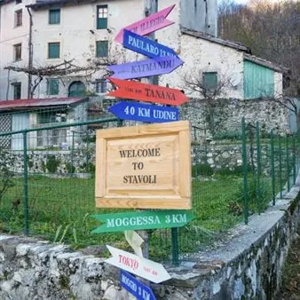

da mar 6 ott a dom 11 ott · dalle 10:00
Residenze a Stavoli - RISVEGLI
residenza dedicata al circo contemporaneo
 Indicazioni
Indicazioni
- Costi e prenotazioni
- Costo non indicato · Prenotazione non indicata
- Programma
- Programma da verificare. Apri la fonte ufficiale per orari e possibili aggiornamenti.
- In caso di maltempo
- Nessuna indicazione specifica pubblicata.
- Note
- Acquisito automaticamente dalla fonte.
L’EVENTO
Descrizione completa
programma:
selezionati abiteranno il borgo, trasformandolo in uno spazio di ricerca, sperimentazione e creazione:
52 Hz — Filippo Seziani e Mark Kevin Barltrop
Un lavoro che intreccia teatro fisico, danza, giocoleria, parola e musica dal vivo. La ricerca ruota attorno al bisogno di sentirsi al sicuro, attraversando una realtà sospesa tra dimensione onirica, solitudine, identità e relazione.
Il Corpo presente — Sarah Ferretti, Simone Di Biagio e Davide Visintini
Una ricerca in cui circo, corpo, suono e paesaggio si modificano reciprocamente. Il corpo diventa luogo e strumento di ascolto, mentre lo spazio non è soltanto uno sfondo, ma un elemento capace di trasformare il gesto e il linguaggio dei performer. Al centro c’è il tema della presenza: rallentare, ascoltare e lasciare che il luogo agisca sul corpo e il corpo risponda.
Il momento pubblico principale sarà domenica 11 ottobre , giornata conclusiva delle residenze.
A partire dalle ore 10.00 si terrà un laboratorio creativo con materiali di recupero a cura di ReAlps , mentre alle ore 15.00 sarà possibile assistere alla restituzione pubblica dei due progetti in residenza , incontrando gli artisti e scoprendo il lavoro sviluppato durante i giorni trascorsi a Stavoli.
Per l’occasione sarà aperto anche il ristoro La Favite , così da permettere al pubblico di trascorrere l’intera giornata a Stavoli.
La partecipazione al laboratorio è prenotabile scrivendo a isoladistavoli@gmail.com e ha un costo di 15 € per adulti e di 10 € per ragazzi fino ai 14 anni, mentre la restituzione è aperta al pubblico.
IL PROGRAMMA
Programma e orari
Appuntamenti raccolti dalle fonti elencate. Dove manca un orario, non è ancora disponibile in questa scheda.
Programma pubblicato
- ore 10.00
- ore 15.00
INFORMAZIONI UTILI
Prima di partire
- Controllare la fonte prima di partire.
ORGANIZZAZIONE